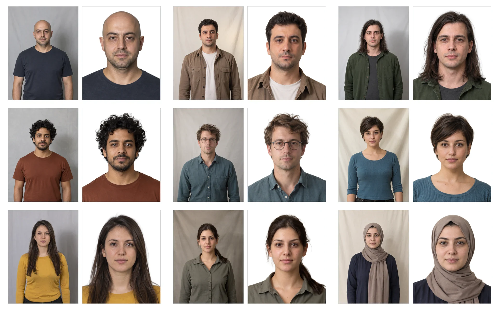

BiyoVes
1Department of Artificial Intelligence and Data Engineering, İstanbul University, İstanbul, Türkiye

What BiyoVes does
BiyoVes aligns a portrait, replaces its background, and places it on the selected white biometric or vesikalık canvas. Each uploaded photo produces three PNG outputs, processed entirely on your computer.
Output formats
Choose the format before processing the photo. The visible head dimensions are composition targets for the selected canvas.
| Format | Canvas | Visible head target |
|---|---|---|
| Biometric | 50 × 60 mm | 36 mm |
| Vesikalık | 45 × 60 mm | 32 mm |
These are BiyoVes composition targets and do not guarantee acceptance by an issuing authority.
Examples
Synthetic portraits before and after BiyoVes processing.


BiyoVes Faces dataset
A small synthetic dataset for demonstrations and evaluation, with 10 portraits and 40 eye-state images across 10 identities.
How to use
On GitHub, select Code → Download ZIP and extract it in your Downloads folder. The extracted folder is usually named biyoves-main.
Windows — install Python 3.13 in PowerShell
winget install --id Python.Python.3.13 --exact --accept-source-agreements --accept-package-agreementsClose and reopen PowerShell, then start BiyoVes
cd "$HOME\Downloads\biyoves-main"
py -3.13 start.pyIf WinGet is unavailable, install Python 3.13 from python.org, then run the start commands above.
macOS — install uv in Terminal
curl -LsSf https://astral.sh/uv/install.sh | shClose and reopen Terminal, then start BiyoVes
cd ~/Downloads/biyoves-main
uv run --no-project --python 3.13 start.pyLinux — install uv in a terminal
curl -LsSf https://astral.sh/uv/install.sh | shIf curl is not available, use wget -qO- https://astral.sh/uv/install.sh | sh. Close and reopen the terminal. uv downloads Python 3.13 if needed.
cd ~/Downloads/biyoves-main
uv run --no-project --python 3.13 start.pyThe first launch installs BiyoVes and opens it in your browser. Keep the terminal open while using the app. Model files download when you process your first photo.